전기철도기사 (2016-03-06 기출문제)
1과목: 전기철도공학
1. 레일로부터 누설전류에 의한 전식방지를 위한 목적으로 지중매설 금속체와 레일을 전기적으로 접속하는 방법이 아닌 것은?
- 직접배류방식
- 선택배류방식
- 자동배류방식
- 강제배류방식
(정답률: 알수없음)

2. 강체 가선구간에서 차고 등 상시 팬터그래프가 승강하는 장소에서는 전차선과 팬터그래프의 접은 높이와의 거리가 몇 mm 이상이어야 하는가?
- 50
- 150
- 250
- 400
(정답률: 알수없음)
3. 열차의 진행을 방해하는 열차 저항이 아닌 것은?
- 주행저항
- 구배저항
- 곡선저항
- 감속저항
(정답률: 알수없음)
4. 교류 25kV급전방식에서 전차선로 가압부분과 대지와의 최소이격거리(mm)는?
- 170
- 250
- 350
- 390
(정답률: 알수없음)
5. 고속철도 전차선 4경간의 에어섹션에서 주축전주 (2e 및 2i)쌍브래킷의 간격(m)은?
- 1.6
- 1.8
- 2.0
- 2.2
(정답률: 알수없음)
6. 가공 전차선로에서 양단의 가고가 같고 전차선이 수평인 경우, 양단사이의 점 x에서 이도 R을 구하는 식은? (단, T:표준온도에 있어서의 조가선의 장력(kgf), W:합성전차선의 단위중량(kg/m), x:경간 중앙에서 행거위치까지의 거리(m)이다.)
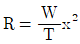
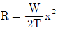
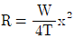
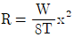
(정답률: 알수없음)
7. 전차선로의 탄성률에 대한 설명이 옳은 것은?
- 경간이 짧을수록 커지며, 전차선 및 조가선의 장력이 작을수록 커진다.
- 경간이 클수록 작아지며, 전차선 및 조가선의 장력이 작을수록 작아진다.
- 경간이 짧을수록 작아지며, 전차선 및 조가선의 장력이 클수록 작아진다.
- 경간과 전차선의 장력이 클수록 커지며, 조가선의 장력이 클수록 작아진다.
(정답률: 알수없음)
8. 전차선의 무효부분은 그 길이가 얼마 이상에 한하여 조가선으로 대체 사용할 수 있는가? (단, 접속점이 팬터그래프의 통과에 지장을 주지 않는 경우)
- 5(m)
- 15(m)
- 30(m)
- 40(m)
(정답률: 알수없음)
9. 전선의 연입률이란?
- 전선의 꼬임에 따라 저항이 증가하는 비율
- 전선이 장력 증가시 늘어나는 정도로, 늘어나는 길이의 비율
- 연선의 실제 길이에 대한 소선의 실제 길이 증가 비율
- 소선의 길이에 대한 전기 저항률
(정답률: 알수없음)
10. T-bar 방식의 전차선로에서 흐름방지장치를 터널 내 및 역 승강장에 설치할 때 어떤 종류의 흐름방지장치를 설치하는가?
- 원형 흐름방지장치
- 삼각형 흐름방지장치
- 마름모꼴 및 특수 흐름방지장치
- 타원형 흐름방지장치
(정답률: 알수없음)
11. 급전선의 이도 D(m)와 장력 T(kgf)의 관계는? (단, w : 전선의 단위중량(kg/m), S : 경간(m)이다.)
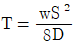
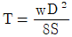
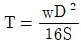
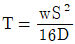
(정답률: 알수없음)
12. 전기차의 VVVF 제어방식이란?
- 주파수와 전류를 제어하는 방식
- 주파수와 전압을 제어하는 방식
- 주파수와 저항을 제어하는 방식
- 주파수와 리액턴스를 제어하는 방식
(정답률: 알수없음)
13. AT급전방식에서 사용되고 있는 가공전선으로 각 지지물에 설치되어 있는 각종 애자의 섬락을 보호하기 위하여 급전선과 병행하여 설치되는 전선은?
- 보호선
- 흡상선
- 섬락보호지선
- 횡단 접속선
(정답률: 알수없음)
14. 정류기용 변압기의 2차권선 전압이 1200V일 때, 무부하시 정류기 2차 직류 발생전압(V)은? (단, 사용 정류기는 3상 전파 브리지 방식이다.)
- 1110
- 1200
- 1500
- 1620
(정답률: 알수없음)
15. 고속전철에서 횡진동에 제한 받는 개소 또는 터널 내에서 이격거리 확보개소에 사용하는 급전선의 지지방식은?
- 수평조가방식
- V형조가방식
- 현수조가방식
- 경사조가방식
(정답률: 알수없음)
16. 강체가선구간에서 R-bar 강체전차선의 브래킷의 표준 간격(m)은?
- 4
- 8
- 10
- 15
(정답률: 알수없음)
17. AT방식 전철 변전소에서 인덕턴스에 의한 전압강하를 보상하고 분수조파 발생을 억제하기 위해 주변압기 2차측 M상, T상 급전선에 설치하는 것은?
- 직렬콘덴서
- 병렬콘덴서
- 단권변압기
- 흡상변압기
(정답률: 알수없음)
18. 레일의 절연이음매부 설치위치의 연직선상으로부터 애자섹션의 설치위치(m)는?
- 2m 이상
- 3m 이상
- 4m 이상
- 5m 이상
(정답률: 알수없음)
19. 강체전차선 경간 중앙의 이도는 지지점 간격(경간)의 얼마 이하로 하는가?
- 1000분의 1
- 1000분의 2
- 1000분의 3
- 1000분의 4
(정답률: 알수없음)
20. 직류 급전방식에서 실리콘 정류기 내부 단락사고를 검출하여 정류기용 변압기 2차측 권선 소손을 예방하는 계전기는?
- 온도 계전기 1
- 역류 계전기
- 고장선택 계전기
- 지락 계전기
(정답률: 알수없음)
2과목: 전기철도 구조물공학
21. 인장력 3800kg를 받는 원형강의 단면은 약 몇 cm인가? (단, 원형강 강재의 허용인장응력은 1900kg/cm2이다.)
- 3.2
- 2.0
- 1.9
- 1.6
(정답률: 알수없음)
22. 지표면에서 높이가 L m인 단독지지주에 w kgf/m의 수평분포하중이 작용하는 경우 지면과의 경계점 모멘트(kgfㆍm)는?
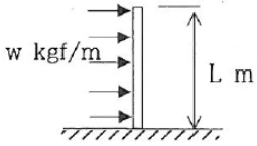
- WㆍL2
- (1/2)WㆍL2
- wㆍL
- (1/2)WㆍL
(정답률: 알수없음)
23. 단면 1차 모멘트와 같은 차원을 가지는 것은?
- 단면 상승모멘트
- 단면 2차모멘트
- 단면계수
- 회전반지름
(정답률: 알수없음)
24. 가공전차선로용 지선의 안전율은 얼마 이상으로 하는가?
- 1.1
- 1.5
- 1.7
- 2.5
(정답률: 알수없음)
25. 전주의 설치위치에 대한 설명으로 거리가 먼 것은?
- 승강장에서는 연단으로부터 1.5m 이상 이격
- 차막이 뒤에서는 5m 이상 이격
- 자동차등이 통행하는 건널목 양측단으로부터 5m이상 이격
- 화물적하장에서는 연단으로부터 1.5m 이상
(정답률: 알수없음)
26. 전기철도 구조물에서 지점의 종류로 거리가 먼 것은?
- 정정지점
- 이동지점
- 힌지지점
- 고정지점
(정답률: 알수없음)
27. 부재의 단면적이 40cm2이고 길이가 2.4m인 강봉에 18t의 인장력이 작용할 경우 강봉의 늘어난 길이(mm)는? (단, 강봉의 영계수(E)는 2400(t/cm2)이고 부재의 자중은 무시한다.)
- 0.45
- 0.5
- 0.55
- 0.6
(정답률: 알수없음)
28. 인장강도가 30kg/mm2인 강재환봉에 1500kg의 인장하중을 가할 때 안전율(5)인 강재환봉의 지름(mm)은?
- 15.55
- 17.85
- 21.45
- 25.65
(정답률: 알수없음)
29. 다음 그림과 같은 트러스(truss)는?
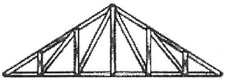
- 왕대공 트러스
- 플레트 트러스
- HOWE 트러스
- 핑크 트러스
(정답률: 알수없음)
30. 태풍의 10분간 평균풍속으로 30m/s가 관측되었다. 순간풍속의 관측값이 없을 경우 이 태풍의 5초간 최대 순간 풍속(m/s)은 얼마로 추정하는가?
- 30.5
- 36.2
- 40.5
- 45.5
(정답률: 알수없음)
31. 바깥지름이 3cm, 두께가 0.5cm인 원형단면강관이 있다. 이 강관의 원형단면의 도심축에 대한 단면2차모멘트(cm4)는?
- 2.⑤
- 3.19
- 4.12
- 6.38
(정답률: 알수없음)
32. 지표면에서 높이가 11m인 단독 지지주에 28kgf/m의 수평분포하중이 작용하는 경우 3.5m 지지점에서의 모멘트(kgfㆍm)는?
- 687.5
- 722.5
- 787.5
- 822.5
(정답률: 알수없음)
33. 지선과 전주의 표준 설치 각도는?
- 25°
- 35°
- 45°
- 60°
(정답률: 알수없음)
34. 그림과 같이 한 점에 작용하는 두 힘의 크기가 40kg과 50kg일때 합력(kg)은?
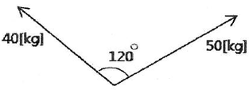
- 45.83
- 46.53
- 47.68
- 48.86
(정답률: 알수없음)
35. 2차원 평면 구조계에서 외력이 작용했을 때 구조물의 위치가 변하지 않는 외적 안정조건은?
- 외력이 작용했을 때 구조물의 형태가 변하는 경우
- 지점의 반력수가 1이상으로 힘의 평형조건을 만족할 때
- 지점의 반력수가 3이상으로 힘의 평형조건을 만족할 때
- 외력이 작용했을 때 구조물의 형태가 변하지 않는 경우
(정답률: 알수없음)
36. 전차선로용 강구조물 중 압축재로 사용되는 보조재는 그 세장비를 얼마 이하로 제한하고 있는가?
- 150
- 200
- 220
- 250
(정답률: 알수없음)
37. 빔의 길이가 몇 m 이상인 경우 스팬선 빔으로 시공하는 것을 원칙으로 하는가?
- 30
- 35
- 38
- 45
(정답률: 알수없음)
38. 가공전차선로에서 전선의 수평장력이 2500kgf, 지선에 작용하는 장력이 5000kgf일 때, 전주에 설치한 지선의 취부 각도가 30°일 경우 지선용 재료에 필요한 항장력(kgf)은 얼마 이상이어야 하는가?
- 6500
- 7500
- 8500
- 12500
(정답률: 알수없음)
39. 정삼각형의 도심을 지나는 여러 축에 대한 단면 2차 모멘트의 값에 대한 다음 설명 중 옳은 것은?
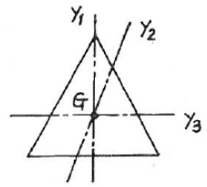
- Iv1 ＞ Iv2 ＞ Iv3
- Iv1 = Iv2 = Iv3
- Iv2 ＞ Iv1 ＞ Iv3
- Iv3 ＞ Iv2 ＞ Iv1
(정답률: 알수없음)
40. 그림과 같은 라멘의 부정정차수는?
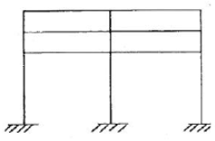
- 9차
- 12차
- 15차
- 18차
(정답률: 알수없음)
3과목: 전기자기학
41. 그림과 같이 공기 중에서 무한평면도체의 표면으로부터 2m인 곳에 점전하 4C이 있다. 전하가 받는 힘은 몇 N 인가?
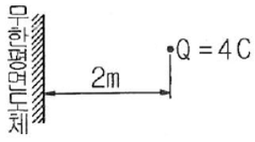
- 3×109
- 9×109
- 1.2×1010
- 3.6×1010
(정답률: 알수없음)
42. 벡터 A=5e-rcosøar-5cosøaz가 원통좌표계로 주어졌다. 점(2, 3π/2, 0) 에서의 ∇×A 를 구하였다. az 방향의 계수는?
- 2.5
- -2.5
- 0.34
- -0.34
(정답률: 알수없음)
43. 극판간격 d(m), 면적 S(m2), 유전율 ε(F/m)이고, 정전 용량이 C(F) 인 평행판 콘덴서에 v=Vmsinwt(V) 의 전압을 가할 때의 변위전류(A)는?
- wCVmcoswt
- CVmsinwt
- -CVmsinwt m
- -wCVmcoswt
(정답률: 알수없음)
44. 비투자율 800, 원형단면적 10cm2. 평균자로의 길이 30cm 인 환상철심에 600회의 권선을 감은 코일이 있다. 여기에 1A의 전류가 흐를 때 코일 내에 생기는 자속은 약 몇 Wb 인가?
- 1×10-3
- 1×10-4
- 2×10-3
- 2×10-4
(정답률: 알수없음)
45. 한 변의 길이가 3m인 정삼각형의 회로에 2A의 전류가 흐를 때 정삼각형 중심에서의 자계의 크기는 몇 AT/m 인가?
- 1/π
- 2/π
- 3/π
- 4/π
(정답률: 알수없음)
46. 내부저항이 r(Ω)인 전지 M 개를 병렬로 연결했을 때, 전지로부터 최대 전력을 공급받기 위한 부하저항(Ω)은?
- r/M
- Mr
- r
- M2r
(정답률: 알수없음)
47. 전기 쌍극자에 관한 설명으로 틀린 것은?
- 전계의 세기는 거리의 세제곱에 반비례한다.
- 전계의 세기는 주위 매질에 따라 달라진다.
- 전계의 세기는 쌍극자모멘트에 비례한다.
- 쌍극자의 전위는 거리에 반비례한다.
(정답률: 알수없음)
48. 자속밀도가 10 Wb/m2 인 자계 내에 길이 4cm의 도체를 자계와 직각으로 놓고 이 도체를 0.4초 동안 1m씩 균일하게 이동하였을 때 발생하는 기전력은 몇 V 인가?
- 1
- 2
- 3
- 4
(정답률: 알수없음)
49. 전류가 흐르고 있는 도체와 직각방향으로 자계를 가하게 되면 도체 측면에 정ㆍ부의 전하가 생기는 것을 무슨 효과라 하는가?
- 톰슨(Thomson) 효과
- 펠티에(Peltier) 효과
- 제벡(Seebeck) 효과
- 홀(Hall) 효과
(정답률: 알수없음)
50. 대지면 높이 h(m)로 평행하게 가설된 매우 긴 선전하(선전하 밀도 λ(C/m))가 지면으로부터 받는 힘(N/m)은?
- h에 비례한다.
- h에 반비례한다.
- h2에 비례한다.
- h2에 반비례한다
(정답률: 알수없음)
51. 판 간격이 d인 평행판 공기콘덴서 중에 두께 t이고, 비유전율이 εs인 유전체를 삽입하였을 경우에 공기의 절연파괴를 발생하지 않고 가할 수 있는 판 간의 전위차는? (단, 유전체가 없을 때 가할 수 있는 전압을 V라 하고 공기의 절연내력은 Eo라 한다.)
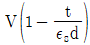
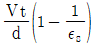
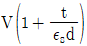
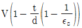
(정답률: 알수없음)
52. 송전선의 전류가 0.01초 사이에 10kA 변화될 때 이 송전선에 나란한 통신선에 유도되는 유도전압은 몇 V 인가? (단, 송전선과 통신선 간의 상호유도계수는 0.3mH이다.)
- 30
- 3×102
- 3×103
- 3×104
(정답률: 알수없음)
53. 반지름이 3m인 구에 공간전하밀도가 1C/m3 가 분포되어 있을 경우 구의 중심으로부터 1m 인 곳의 전위는 몇 V 인가?
- 1/2εo
- 1/3εo
- 1/4εo
- 1/5εo
(정답률: 알수없음)
54. 전선을 균일하게 2배의 길이로 당겨 늘였을 때 전선의 체적이 불변이라면 저항은 몇 배가 되는가?
- 2
- 4
- 6
- 8
(정답률: 알수없음)
55. 서로 멀리 떨어져 있는 두 도체를 각각 V1(V), V2(V) (V1＞V2)의 전위로 충전한 후 가느다란 도선으로 연결 하였을 때 그 도선에 흐르는 전하 Q(C)는? (단, C1, C2 는 두 도체의 정전용량이다.)
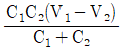
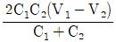
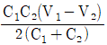
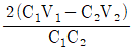
(정답률: 알수없음)
56. 무한히 넓은 평면 자성체의 앞 a(m) 거리의 경계면에 평행하게 무한히 긴 직선 전류 I(A)가 흐를 때, 단위 길이당 작용력은 몇 N/m 인가?
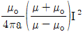
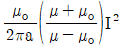
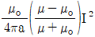
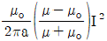
(정답률: 알수없음)
57. 인덕턴스가 20 mH 인 코일에 흐르는 전류가 0.2초 동안에 2A 변화했다면 자기유도현상에 의해 코일에 유기되는 기전력은 몇 V 인가?
- 0.1
- 0.2
- 0.3
- 0.4
(정답률: 알수없음)
58. 변위전류밀도와 관계없는 것은?
- 전계의 세기
- 유전율
- 자계의 세기
- 전속밀도
(정답률: 알수없음)
59. 반지름 a(m)인 구대칭 전하에 의한 구내외의 전계의 세기에 해당되는 것은?
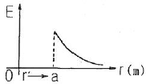
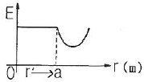
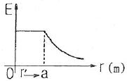
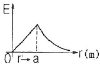
(정답률: 알수없음)
60. 한 변의 길이가 l(m)인 정삼각형 회로에 전류 I(A)가 흐르고 있을 때 삼각형 중심에서의 자계의 세기(AT/m)는?
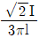
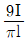
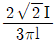
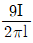
(정답률: 알수없음)
4과목: 전력공학
61. 연간 전력량이 E(kWh)이고, 연간 최대전력이 W(kW)인 연부하율은 몇% 인가?
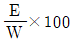
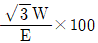
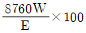
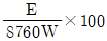
(정답률: 알수없음)
62. 동기조상기에 관한 설명으로 틀린 것은?
- 동기전동기의 V특성을 이용하는 설비이다.
- 동기전동기를 부족여자로 하여 컨덕터로 사용한다.
- 동기전동기를 과여자로 하여 콘덴서로 사용한다.
- 송전계통의 전압을 일정하게 유지하기 위한 설비이다.
(정답률: 알수없음)
63. 플리커 경감을 위한 전력 공급측의 방안이 아닌 것은?
- 공급 전압을 낮춘다.
- 전용 변압기로 공급한다.
- 단독 공급 계통을 구성한다.
- 단락 용량이 큰 계통에서 공급한다.
(정답률: 알수없음)
64. 그림과 같은 단거리 배전선로의 송전단 전압 6600V, 역률은 0.9 이고, 수전단 전압 6100V, 역률 0.8 일 때 회로에 흐르는 전류 I(A)는? (단, Es 및 Er은 송ㆍ수전단 대지전압이며, r=20Ω, x=10Ω 이다.)
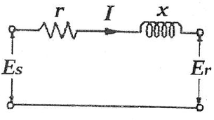
- 20
- 35
- 53
- 65
(정답률: 알수없음)
65. 그림과 같은 22kV 3상 3선식 전선로의 P점에 단락이 발생하였다면 3상 단락전류는 약 몇 A인가? (단, %리액턴스는 8%이며 저항분은 무시한다.)
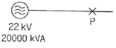
- 6561
- 8560
- 11364
- 12684
(정답률: 알수없음)
66. 피뢰기가 그 역할을 잘 하기 위하여 구비되어야 할 조건으로 틀린 것은?
- 속류를 차단할 것
- 내구력이 높을 것
- 충격방전 개시전압이 낮을 것
- 제한전압은 피뢰기의 정격전압과 같게 할 것
(정답률: 알수없음)
67. 단락용량 5000MVA인 모선의 전압이 154kV라면 등가 모선임피던스는 약 몇 Ω 인가?
- 2.54
- 4.74
- 6.34
- 8.24
(정답률: 알수없음)
68. 피뢰기의 제한전압이란?
- 충격파의 방전개시전압
- 상용주파수의 방전개시전압
- 전류가 흐르고 있을 때의 단자전압
- 피뢰기 동작 중 단자전압의 파고값
(정답률: 알수없음)
69. 송전계통의 안정도를 증진시키는 방법이 아닌 것은?
- 전압변동을 적게 한다.
- 제동저항기를 설치한다.
- 직렬리액턴스를 크게 한다.
- 중간조상기방식을 채용한다.
(정답률: 알수없음)
70. 그림과 같은 전력계통의 154kV 송전선로에서 고장 지락 임피던스 Zgf를 통해서 1선 지락 고장이 발생되었을 때 고장점에서 본 영상 %임피던스는? (단, 그림에 표시한 임피던스는 모두 동일용량, 100MVA 기준으로 환산한 %임피던스임)
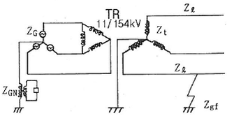
- Z0=Zℓ+Zt+ZG
- Z0=Zℓ+Zt+Zgf
- Z0=Zℓ+Zt+3Zgf
- Z0=Zℓ+Zt+Zgf+ZG+ZGN
(정답률: 알수없음)
71. 저압배전선로에 대한 설명으로 틀린 것은?
- 저압 뱅킹 방식은 전압변동을 경감할 수 있다.
- 밸런서(balancer)는 단상 2선식에 필요하다.
- 배전선로의 부하율이 F일 때 손실계수는 F와 F2의 중간 값이다.
- 수용률이란 최대수용전력을 설비용량으로 나눈 값을 퍼센트로 나타낸 것이다.
(정답률: 알수없음)
72. 비등수형 원자로의 특색이 아닌 것은?
- 열교환기가 필요하다.
- 기포에 의한 자기 제어성이 있다.
- 방사능 때문에 증기는 완전히 기수분리를 해야 한다.
- 순환펌프로서는 급수펌프뿐이므로 펌프동력이 작다.
(정답률: 알수없음)
73. 전력계통에서 내부 이상전압의 크기가 가장 큰 경우는?
- 유도성 소전류 차단시
- 수차발전기의 부하 차단시
- 무부하 선로 충전전류 차단시
- 송전선로의 부하 차단기 투입시
(정답률: 알수없음)
74. 3상 결선 변압기의 단상 운전에 의한 소손방지 목적으로 설치하는 계전기는?
- 단락 계전기
- 결상 계전기
- 지락 계전기
- 과전압 계전기
(정답률: 알수없음)
75. 송전선로의 각 상전압이 평형되어 있을 때 3상 1회선 송전선의 작용정전용량(μF/km)을 옳게 나타낸 것은? (단, r은 도체의 반지름 (m), D는 도체의 등가선간거리(m)이다.)
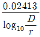
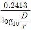
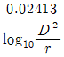
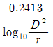
(정답률: 알수없음)
76. 인터록(interlock)의 기능에 대한 설명으로 맞는 것은?
- 조작자의 의중에 따라 개폐되어야 한다.
- 차단기가 열려 있어야 단로기를 닫을 수 있다.
- 차단기가 닫혀 있어야 단로기를 닫을 수 있다.
- 차단기와 단로기를 별도로 닫고, 열 수 있어야 한다.
(정답률: 알수없음)
77. 송전선로에서 송전전력, 거리, 전력손실율과 전선의 밀도가 일정하다고 할 때, 전선 단면적 A(mm2)는 전압 V(V)와 어떤 관계에 있는가?
- V에 비례한다.
- V2에 비례한다.
- 1/V 에 비례한다.
- 1/V2 에 비례한다.
(정답률: 알수없음)
78. 화력발전소에서 재열기의 목적은?
- 급수 예열
- 석탄 건조
- 공기 예열
- 증기 가열
(정답률: 알수없음)
79. 150kVA 단상변압기 3대를 △-△결선으로 사용하다가 1대의 고장으로 V-V결선하여 사용하면 약 몇 kVA 부하까지 걸 수 있겠는가?
- 200
- 220
- 240
- 260
(정답률: 알수없음)
80. 차단기의 정격 차단시간은?
- 고장 발생부터 소호까지의 시간
- 가동접촉자 시동부터 소호까지의 시간
- 트립코일 여자부터 소호까지의 시간
- 가동접촉자 개구부터 소호까지의 시간
(정답률: 알수없음)